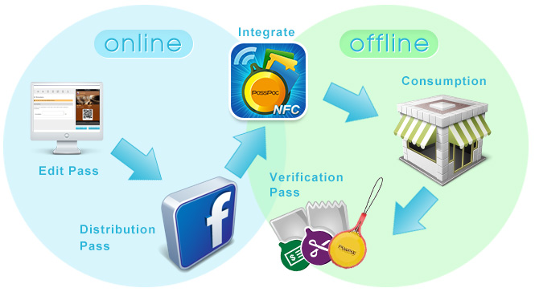
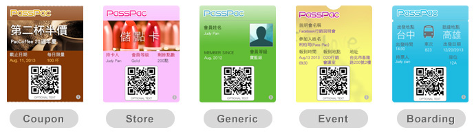

Passpac
NFC for SmartPhone
What's Passpac
PassPac is a O2O marketing tool, including PassPac Web,PassPac App, and NFC Adapter. The O2O marketing tools provide generating Passes, distributing passes, and managing passes. The PassPac Web is for Facebook fan page owner to manage pass, the PassPac App is just for end user to use the passes.
What is O2O?
O2O marketing is a marketing tool to allow Online to Offline audiences (vice versa) to connect their virtual world with the real world identity, and to successfully apply these tools to achieve successful marketing campaign.
What is pass?
The pass refers to our everyday forms of paper or plastic cards and other valuable securities converted into a computer or mobile phone screen can render the securities in electronic form, including five kinds of forms.
